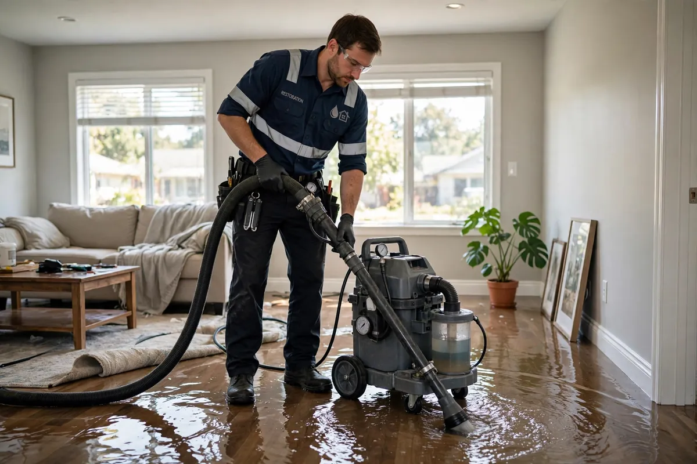
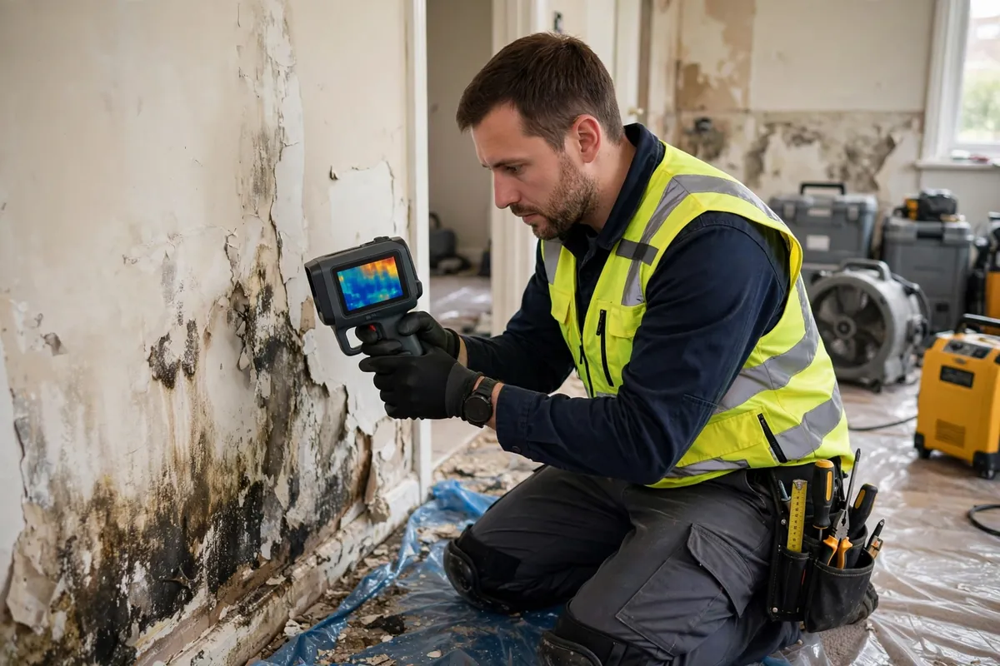
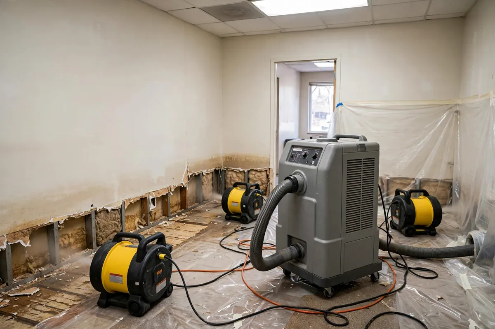

Water Damage Restoration in Hollywood, FL
Fast, professional water damage restoration in Hollywood, FL for homes and businesses affected by leaks, flooding, burst pipes, sewage backups, storms and other water emergencies. When you need water damage restoration in Hollywood, our local team is ready 24/7.
Need Help Right Now?
- Average response under 60 minutes
- Water extraction & structural drying
- Sewage & black water cleanup
- Mold prevention treatments
- Full documentation for insurance
Available 24/7: We provide service 24 hours a day, 7 days a week — Monday through Sunday. In any emergency, at any time, you can reach us for water damage help in Hollywood, FL.
Water Damage Restoration Hollywood FL — Local Help When Every Minute Counts
Water does not wait for a convenient time. A supply line can fail at 2 a.m. A roof can start dripping during a summer storm. A sewer line can back up after heavy rain. When that happens in Hollywood, Florida, you need more than a general contractor and a box fan. You need focused water damage restoration that starts with stopping the spread of moisture and ends with a structure that is actually dry.
Hollywood Water Damage Experts provides water damage restoration in Hollywood for residential and commercial properties across the city. We handle the full sequence: emergency contact, water extraction, moisture mapping, structural drying, cleaning where needed, and clear documentation. Whether you searched for water damage restoration near me or were referred by a neighbor, our job is the same — respond quickly and do the work thoroughly.
What Water Damage Really Means in South Florida
People often say “I have water damage” when they see a wet carpet or a stained ceiling. In practice, water damage is a process. Water moves. It follows gravity and paths of least resistance. It soaks into drywall paper, carpet padding, insulation, and the edges of hardwood. In Hollywood’s warm, humid climate, that moisture does not simply evaporate on its own in a safe or controlled way. Left alone, it can support microbial growth, warp materials, and turn a contained problem into a much larger repair.
That is why local water damage restoration is not only about removing what you can see. The industry term for this emergency phase is water mitigation: the rapid actions taken to limit damage, stop moisture from spreading, and stabilize the property before any repairs begin. It is about understanding where the water went, how wet the materials still are, and how to dry them to a standard that protects the building and the people inside it. Emergency water damage restoration starts with speed. Complete restoration finishes with verification.
Common Causes of Water Damage in Hollywood Homes and Businesses
We respond to the same patterns again and again across Hollywood Beach, Hollywood Lakes, Emerald Hills, Hollywood Hills, Boulevard Heights, and the rest of the city:
- Burst pipes and plumbing failures — supply lines, fittings, and aging pipes that release clean water under pressure
- Appliance leaks — washing machines, dishwashers, water heaters, and refrigerator ice-maker lines
- Roof and ceiling leaks — especially during rainy season and after storms, when water travels along decking before it appears indoors
- Flooding and storm intrusion — heavy rain, wind-driven water, and lower-level accumulation
- Sewage and drain backups — Category 3 events that require strict safety and cleaning protocols
- HVAC and condensate issues — overflow from air conditioning systems that can wet ceilings and closets
Each of these starts as a water problem. The restoration approach depends on the source, the category of water, how long materials have been wet, and what parts of the structure are affected. Residential and commercial water damage restoration follow the same core principles, with adjustments for occupancy, business hours, and the scale of the space.
Our Approach to Water Damage Cleanup and Repair
Effective water damage cleanup is a sequence, not a single action. After the water source is controlled, we focus on extraction. Standing water is removed with professional equipment so that drying can begin under better conditions. Then comes moisture mapping — using meters and, when useful, thermal imaging — to find damp areas that are not obvious from the surface. Structural drying follows: air movers and dehumidifiers are placed to create airflow and pull moisture out of materials. Monitoring continues until readings support a dry standard.
Water damage repair in the sense of rebuilding (new drywall, new flooring, paint) often comes after the structure is dry. Our primary role is the water side of the job: extraction, drying, sanitation when required, and documentation. That foundation makes later repairs more reliable and helps limit the chance of hidden moisture problems lingering behind new finishes.
Water Mitigation and Cleanup Services
Every loss is different, but most Hollywood water emergencies fall into a few familiar categories. Our referral network connects you with local providers for:
- Emergency water extraction — rapid standing-water removal with professional pumps and extractors
- Structural drying — air movers, dehumidifiers, and moisture-meter verification until materials test dry (why structural drying matters)
- Flood cleanup — storm, hurricane, and rainwater intrusion response
- Sewage backup cleanup — Category 3 black-water containment, removal, and sanitization
- Burst pipe cleanup, roof leak cleanup, and appliance leak cleanup — source-specific response
- Mold remediation support — antimicrobial treatment to help prevent growth after intrusion (how fast mold grows)
See the full list of 30 services on our services page.

Our Water Damage Mitigation Process
Effective water mitigation follows the same sequence on nearly every job:
- Emergency contact and safety check — we confirm the address, whether water is still flowing, and any electrical or contamination hazards.
- Stop the source — the leak or intrusion point is addressed first; drying a space with active water entry wastes the effort.
- Water extraction — standing water is removed with professional extraction equipment.
- Moisture mapping — meters and thermal imaging locate damp areas inside walls, under flooring, and in cavities you cannot see.
- Structural drying and dehumidification — air movers and dehumidifiers run until moisture readings support a dry standard.
- Cleaning, sanitizing, and documentation — affected surfaces are cleaned as needed, and you receive photos, readings, and a work summary for your records and your insurer.

How Long Does Water Damage Restoration Take?
Timelines depend on the water category, how long materials stayed wet, and what was affected — but most jobs follow a familiar pattern:
- Emergency response and extraction: same day, usually within hours of your call.
- Structural drying: typically 3 to 5 days with professional equipment; high humidity or dense materials can extend it.
- Repairs and rebuilding: 1 to 3 weeks for drywall, flooring, and finishes, depending on scope and material availability.

These are typical ranges, not guarantees — a small clean-water leak on tile dries far faster than a Category 3 flood affecting multiple rooms. Your provider will outline a timeline during the on-site assessment.
Residential and Commercial Water Damage Restoration
Residential water damage restoration covers single-family homes, townhomes, and similar living spaces. The priorities are safety, protecting belongings when possible, and returning living areas to a dry, usable condition. Commercial water damage restoration adds business continuity: limiting downtime, coordinating with property managers, and documenting losses for commercial policies. Offices, retail spaces, and multi-unit buildings in Hollywood all fall within the work we do.
In both settings, clear communication matters. You should know what we found, what we are doing, and what the next step looks like. Surprises help no one during an already stressful event.
Why Local Water Damage Restoration Matters in Hollywood
Local water damage restoration means shorter response times and familiarity with the building types and weather patterns here. Hollywood sits between the coast and inland communities. Storms, humidity, and older plumbing in some areas create a steady demand for water damage services. A team that works this market regularly does not need a long explanation of why a ceiling is wet three rooms away from a roof penetration, or why a lower level stays damp after a summer downpour.
When homeowners search for water damage restoration near me, they are usually under time pressure. They want someone who answers the phone, arrives with the right equipment, and can explain the process without sales theatrics. That is the standard we aim for. Not sure how to vet a provider? See how to choose a water damage restoration company.
Insurance Claims and Documentation
Many sudden and accidental water losses are covered under standard homeowners policies; flood from external rising water is often a separate policy. We do not decide coverage or provide insurance advice — your carrier does. What we provide is thorough documentation: photos, moisture readings, equipment logs, and notes on the scope of work, so you have clear records for your adjuster. Learn how homeowners insurance handles water damage.
What to Expect When You Call
You reach a live response path for emergencies. We gather the essentials: address, what you see, whether water is still flowing, and any safety concerns. A crew is dispatched with extraction and drying equipment appropriate to the call. On site, we assess, extract, map moisture, and set a drying plan. You get updates as the job progresses. When materials reach target dryness, equipment is removed and you receive a clear summary of the work.
Emergency water damage restoration is available around the clock because water events do not follow business hours. For non-emergency questions, the same number reaches the team during normal office windows. If you just found water damage, start with our guide on what to do after water damage.
Neighborhoods We Serve
Water damage restoration Hollywood FL is not limited to one zip code. We regularly work in Hollywood Beach, Central Beach, North Beach, Hollywood Lakes, Downtown and Young Circle, Parkside, Hollywood Hills, Emerald Hills, Highland Gardens, Washington Park, Boulevard Heights, Driftwood, Liberia, and surrounding communities. If you are in the Hollywood area and dealing with water in your property, we are set up to respond.
If you are dealing with active water damage right now, call (754) 294-7959. For an overview of specific services — from water extraction to sewage cleanup to structural drying — use the services menu above or browse our service pages. For neighborhood-specific information, see our service areas. Practical guides are available on the blog.
Neighborhoods We Serve in Hollywood, FL
Local response across the entire city — including these communities and their ZIP codes.
Frequently Asked Questions
Common questions about water damage restoration in Hollywood, FL.
How long does water damage restoration take in Hollywood, FL?
Most jobs follow a familiar pattern: emergency extraction happens the same day, structural drying typically takes 3 to 5 days with professional equipment, and repairs add 1 to 3 weeks depending on scope. The timeline depends on the water category, how long materials stayed wet, and what was affected — your provider will outline one during the on-site assessment.
What should I do first when I discover water damage?
Stop the water source if you can do so safely, turn off electricity to wet areas, move valuables out of the way, take photos for insurance, and call for professional help — especially if the water may be contaminated. See our guide on what to do after water damage.
Does homeowners insurance cover water damage restoration?
Many sudden and accidental losses, like burst pipes, are covered under standard homeowners policies, while flood from rising external water usually requires separate flood insurance. Your carrier decides coverage; we provide the photos, moisture readings, and work documentation your adjuster needs. More detail in our guide to homeowners insurance and water damage.
How fast can you respond to a water emergency in Hollywood?
We provide 24/7 emergency response across Hollywood, FL. Call (754) 294-7959 and we dispatch the soonest available local crew for active water losses.
How do you find hidden moisture behind walls and under floors?
With moisture meters and thermal imaging cameras that reveal damp areas inside walls, under flooring, and in cavities — places you cannot assess by touch or sight alone. Drying is verified with moisture readings, not guesswork.
How soon can mold grow after water damage?
In Florida's humidity, mold can begin growing within 24 to 48 hours of water exposure. Fast extraction and thorough structural drying are the primary defense; antimicrobial treatment may be used on cleaned surfaces. Read more about how fast mold grows after water damage.
What is the difference between Category 1, 2, and 3 water damage?
Category 1 is clean water from a sanitary source such as a supply line. Category 2 (gray water) carries some contamination, for example from appliances. Category 3 (black water) includes sewage and floodwater and requires strict safety protocols. The category determines which materials must be removed versus cleaned. See our guide to Category 1, 2, and 3 water damage.
Can I stay in my home during water damage restoration?
Often, yes — for contained clean-water losses you can usually remain in unaffected areas. For sewage contamination, major demolition, or extensive drying equipment running around the clock, temporary relocation may be more comfortable. Your provider will advise based on the job.